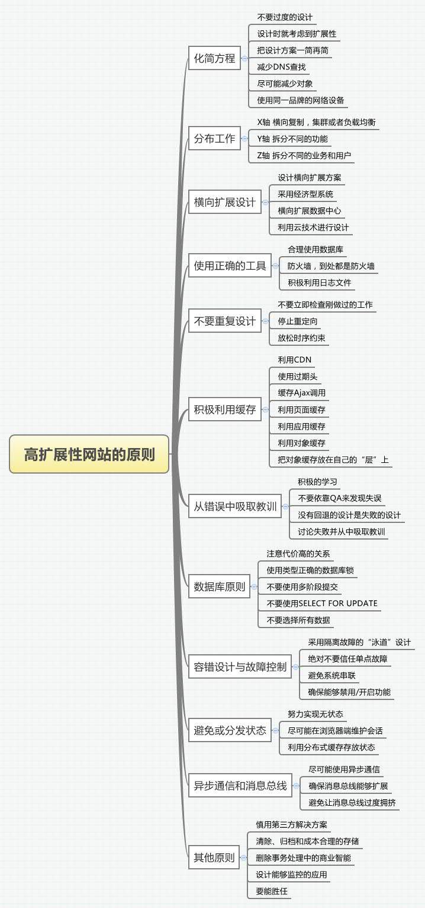
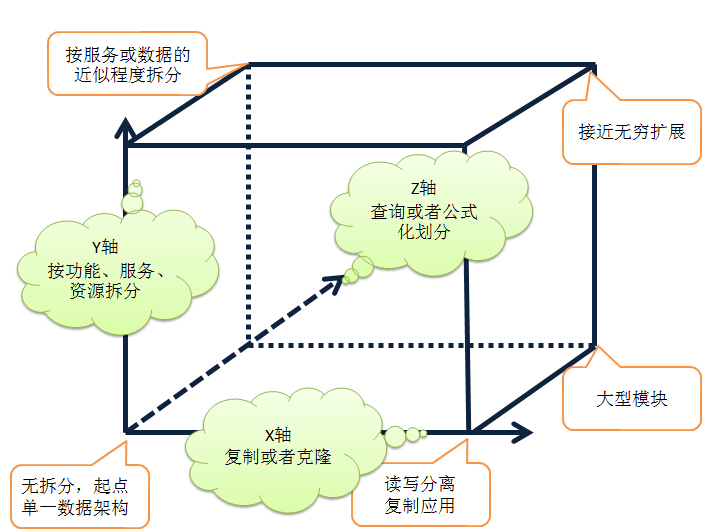
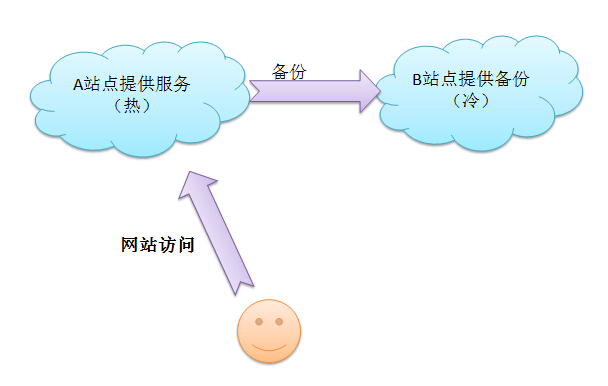
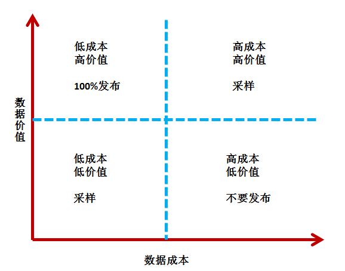
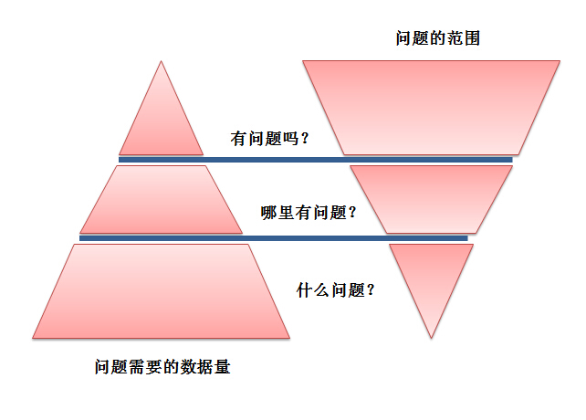

目录 [−]
xingoo总结的构建高扩展性网站的原则。
本篇通过阅读《高扩展性网站的50条原则》，总结出以下内容。
一方面博主没有实际的架构经验，另一方面知识面也不够宽阔，所以只能系统的总结书中的要点，并根据自己的理解做些归纳。
主要内容
本书从多个方面围绕高扩展性提出了50条建议，一个高扩展性的网站会随着业务的发展、用户的增加，自由的扩展架构，从而轻松的应付网站的快速发展。下面看看本书的具体内容：

化简方程
1 不要过度的设计
过度的设计相当于给系统增加了复杂度与维护的成本。而这些过度的设计，在正常的使用中，却没有太大的作用。往往是设计者自己认为很重要或者锦上添花的功能，实际用处不大。
2 设计时考虑到扩展性
在设计时要遵循一下的设计原则：设计时考虑20倍的容量，实现时考虑3倍的容量，部署时考虑1.5的容量。一面项目扩大时，临时扩展造成的困难。
3 把方案一简再简
应该遵循帕累托法则，20%的设计做了80%的工作，所以80%的时间，都应该放在这20%的设计上。
一个产品主要的功能其实都集中在几个点上，把这几个点设计好了，其他的都是些附加的功能而已。所以这核心的业务一定要保证足够的简洁易用。
4 减少DNS查询
每个不同的域下的文件，加载时都需要查询DNS。比如cnblogs.com与i.cnblogs.com就属于不同的域。那么在查询DNS的时候，就会查询两次。当业务量很大时，就会造成一定的影响。
5 尽可能减少对象
由于对象在浏览器访问时，需要加载。所以可以考虑减少请求文件的数量（数量与浏览器并发加载数有关），把一些对象尽量的合并。比如图标类的文件，可以合并成一个大的图片。合理的文件数量，会加速浏览器的访问加载。
6 使用同一品牌的网络设备
由于一个http请求，可能通过很多物理设备。比如负载均衡器，交换机，路由器。所以尽量使用同一品牌的设备，会避免一些意外的情况。
分布工作

7 X轴，横向复制
这种事最简单的服务扩充，通过克隆或者复制实现，比如你的应用放在多个服务器上进行服务。常见的比如集群，负载均衡等等，数据库的读写分离。
8 Y轴，拆分不同的东西
大型系统中，拆分不同的功能，比如注册、购买、查询、云盘。等等
9 Z轴，拆分不同的相似的东西
比如按照用户的级别，或者用户的地理位置等等拆分。
横向扩展设计
10 设计横向的扩展方案
扩展包括横向、纵向。横向就是通过复制克隆应用，利用小型机集群扩展。纵向就是提高服务器的硬件以及网络设施。
通过很多的案例都可以发现，单纯的升级硬件实现的纵向扩展，仅仅能解决一点点现实压力。而通过横向的集群扩展，却能够自由的实现伸缩。
11 采用经济型系统
与上面的原则类似，采用高价格的服务器，并不能保证日后的良好性能。应该使用普通的小型机集群扩展。
12 横向扩展数据中心
数据中心有很多的设计方案，比如
热冷站配置：使用热站提供服务，当热站崩溃时，使用冷站继续服务。

推荐使用多个实时站点，成本更低，动态调用。缺点是增加了运维的难度。
13 利用云技术进行设计
云计算的有点就是虚拟化，可以在业务峰值时，弹性的扩充设备。并且在日常处理用，归还该扩展。
缺点是提高了应用于虚拟环境的耦合。后面提到利用物理设备，隔离业务，在虚拟化的云计算中，可能会对业务隔离错误排查造成一定的干扰。
使用正确的工具
14 合理使用数据库
目前有许多的数据库版本，比如传统的关系型数据库Oracle、MySQl，还有比较新的非关系型数据库NoSql，比如MongoDB，以及内存数据库FastDB，还有专门针对SSD固态硬盘的Aerospike等等。
但是到了选型的时候，还是要一句个人的业务需求来定。看你的数据库要求的是速度，还是安全性等等。
15 防火墙，到处都是防火墙
防火墙可以对一些无效的访问进行拦截过滤。通常把一些CSS，静态文件，图片，JS等不采用防火墙，而关键的业务涉及到个人信息时采用。合理的设计防火墙，也会对网站的性能产生一定的影响。
16 积极的利用日志文件
利用各种日志以及工具，实时的监控业务。不仅仅是监控服务器的内存CPU，还应该监控业务上的数据。比如splunk（提供日志的搜集，存储，搜索，图形化展示）。
不要做重复的工作
17 不要立即检查刚做过的工作
比如刚刚写如了数据，不要立即读取。虽然有些客户需要保证数据的完整，不能丢失。但是可以通过日志等记录，写完查这种做法，还是不推荐。
18 停止重定向
重定向会消耗一定的延迟，计算资源。应该尽量避免
19 放松时序约束
大多数的关系型数据库讲究ACID属性，扩展时就造成一定的困扰。因此某些业务适当的放松时序约束，可以提高网站的性能。
比如某站在预定酒店时，用户预定后，会等待酒店的审核。比如某宝，在提款时，进行范围时间的确认。这种就是扩大了时序约束，进而提高网站性能以及事务安全。
积极利用缓存
20 利用CDN
可以利用CDN保存客户的数据和内容。大概的过程是，用户在进行网站访问时，转到CDN的服务器，CDN执行DNS查询，把用户请求分摊到不同的服务器。有很多的CDN服务商提供这种服务。
21 使用过期头
针对不同的对象类型，使用过期头，减少对象请求。常见的HTTP对应属性为:public no-cahe max-age等等
22 缓存Ajax调用
正确修改Http头Last-Modified Cache-Control Expires等属性。
23 利用页面缓存
缓存响应之前的冬天请求，降低web服务器的负载。
24 利用应用缓存
比如针对某些特殊的用户，缓存其请求数据。
25 利用对象缓存
适用于反复查询使用的数据对象。比如一个购物网站，缓存器热销产品数据。
26 把对象缓存放在自己的层上
使用单独的缓层，易于扩展和维护。
从错误中吸取教训
27 积极的学习
一个公司有学习的氛围，才会衍生出更好的产品。学习的内容一方面包括客户的业务知识，一方面来自技术和运维领域。
28 不要依靠QA发现失误
雇佣测试或者质量保证人员，最大的目的是为了检测产品的正确性。它能减少成本，提高开发人员的开发速度，因为开发人员不需要时刻关注代码的正确性，可以交给QA来测试。
但是QA只负责发现问题，如何避免为题还是得依靠开发人员。
29 没有回退的设计是失败的设计
这里的回退，指的是产品发布的回退。如果碰上某些版本的BUG，可能需要交付之前可运行的版本，此时没有回退，就无法交付产品了。
这里推荐学习持续集成的相关内容。
30 讨论失败并从中吸取教训
不应该在同一个问题上失败两次，每次失败多进行总结是不可缺少的。
数据库原则
关系型数据库的ACID属性：
- 原子性：一个事务要么全执行，要么都不执行，
- 一致性：事务开始和结束时，所有数据状态要一致，
- 隔离性：事务的表现，是事务对数据库唯一的操作，
- 持久性：事务完成，操作不能更改。
31 注意代价高的关系
应该在设计阶段完善的设计表的结构，等开发开始时，在增加某些列，可能会花费很高的代价。
32 使用正确的数据库锁
数据库有很多锁的概念，比如隐式锁、显式锁、行锁、页锁、范围锁、表锁、数据库锁等等。
不合理的使用锁，会影响网站的吞吐量。
33 不要使用多阶段提交
比如两阶段提交：先表决，在提交。这回降低扩展性，因为在其提交事务完成前，是不能作其他操作的。
34 不要使用select for update
因为FOR UPDATE从句会导致锁定行，降低事务处理的速度。
35 不要选择所有的数据
比如select * from xxx;
这种做法第一是不开与数据的扩展，比如本来有四列数据，业务处理代码直接写死。当增加了一列数据时，就会导致出错；另外就是会查询出不必要的数据。
或者inset into xxx values(xxxx);
这时当列信息不匹配时，也会出错。
容错设计与故障控制
36 采用隔离故障的”泳道“
服务与数据的划分有很多种，比如容器，集群，池，分片，泳道。泳道意味着每个业务有自己的领域，不能跨泳道调用。
37 不要信任单点故障
有很多系统设计成单点模式，当整个系统只是用该模块时，当出现单点故障，整个系统也就崩溃了。
38 避免系统串联
比如一个系统有很多的组件组成，每个组件99.9%的安全性，当串联3个组件时，整个系统的可用性就变成了99.7%。
39 确保能够启用/禁用功能
对于某些共享库，第三方服务，应该提供开启或者关闭的功能。
避免或分发状态
40 努力实现无状态
实现状态会限制扩展性，增大成本
41 尽可能在浏览器端维护会话
一方面降低服务器压力，另一方面任何的请求可以发送给任何的服务器。
42 利用分布式缓存存放状态
使用独立的缓存层，利于扩展。有很多分布式的缓存方案，比如memcached。
异步通信和消息总线
43 尽可能使用异步通信
异步通信，可以确保每个服务和层之间的独立性，这样易于早呢更加系统的扩展性和减小耦合度。
44 确保消息总线能够扩展
尽量采用Y轴或者Z轴扩展，即按业务需求和功能扩展。因为单纯的复制或者克隆，反而会增加各个消息订阅者的监听数目。按照业务隔离，可以分离业务压力。
45 避免让消息总线过度拥挤
衡量价值与消息的成本。

其他原则
46 慎用第三方解决方案扩展
企业如果出现问题，那么寻找第三方能够解决燃眉之急。但是却不是长久之计，因为解决方案的提供商有很多客户，你的危机并不是他们的危机，所以不可能在关键时刻，尽职尽责。因此企业还是应该有一定的掌控力（这个词真是高大上！）。
47 清除、归档和成本合理的存储
有一些不必要的数据，就应该定期的删除。一些略有价值的数据进行定期的归档直接删除。一些很有价值的数据，应该进行备份以及快速访问。
48 删除事务处理中的商业智能
应该把产品系统与业务系统分离，提高产品的扩展性。
避免业务扩展时，受到系统架构的限制。
49 设计能够监控的应用
应该设计全局的监控策略，保证回答
”发生了 问题了吗？“
”哪里发生了问题？“
”发生了什么问题？“
”会发生问题吗？“
”能自动修复吗？“

50 要能胜任
应该在每个设计中涉及到最优秀的架构，不能完全依赖第三方的解决方案。
一个简单优秀的架构，都是小而精的，如果单纯的依靠开源解决架构，虽然解决了问题，却会导致应用的臃肿。